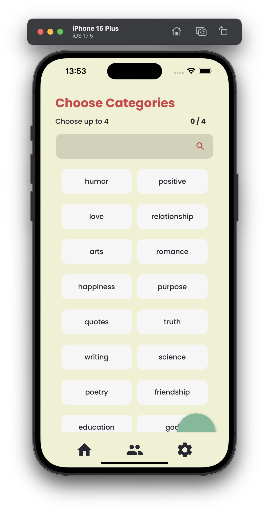
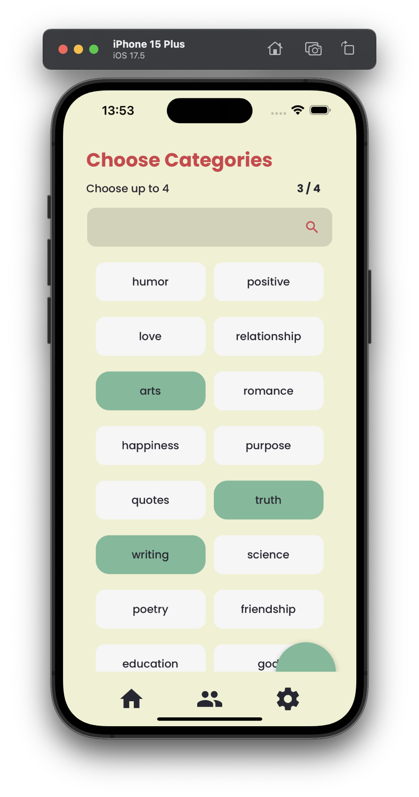
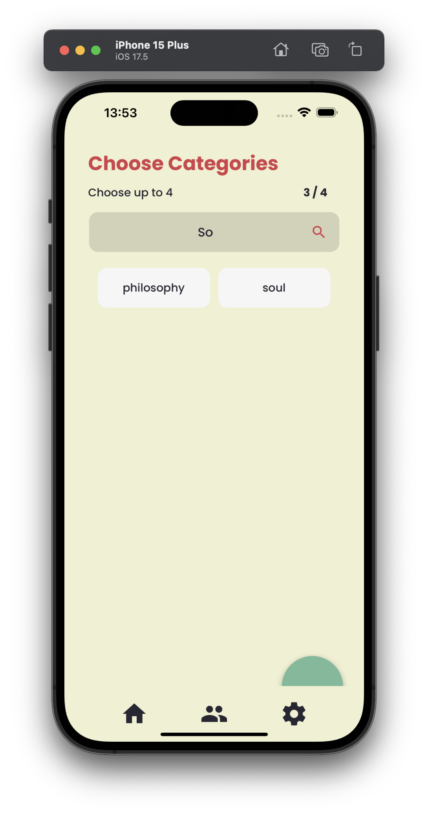

Picking your preferred Categories
JustSayin allows you to customize your daily quotes by selecting categories that match your interests. This guide provides step-by-step instructions on how to select your preferred categories to tailor the quotes you receive each day.
Steps to Choose Your Categories
Access the Categories Menu:
Open the JustSayin app on your device.
Tap on the 'Settings' icon located typically in the bottom right corner of the app. From the settings menu, select 'Choose Categories' to begin customizing your preferences.
Selecting Categories:
You will see a list of categories such as 'Humor', 'Love', 'Philosophy', and 'Education' among others. Each category represents a theme for the type of quotes you will receive.
You can choose up to four categories. Simply tap on a category to select it. Selected categories will be highlighted.
If you wish to deselect a category, tap on it again, and it will be unselected.

Using the Search Function:
If you are looking for a specific category, use the search bar at the top of the 'Choose Categories' page.
Type the name of the category. As you type, the app will filter and display matching categories. Select your desired category from the filtered results.

Saving Your Selections:
Once you have chosen up to four categories, the app will automatically save your preferences. There is no need to press a 'save' button.
These categories will be used to curate the daily quotes you receive on your widget and within the app.
Adjusting Your Preferences:
You can change your category preferences at any time by revisiting the 'Choose Categories' menu and adjusting your selections as described above.
Tips for Choosing Categories
- Balanced Variety: Consider selecting categories that cover different aspects of interest to enjoy a variety of quotes. For example, choosing 'Humor', 'Philosophy', 'Love', and 'Science' can provide a well-rounded mix of daily inspiration.
- Reflect Personal Goals: Choose categories that align with your current life goals or interests. If you're focusing on personal growth, 'Education' and 'Purpose' might be fitting choices.
By customizing your categories, JustSayin ensures that the daily quotes you receive are tailored to your preferences, making each quote more relevant and engaging.